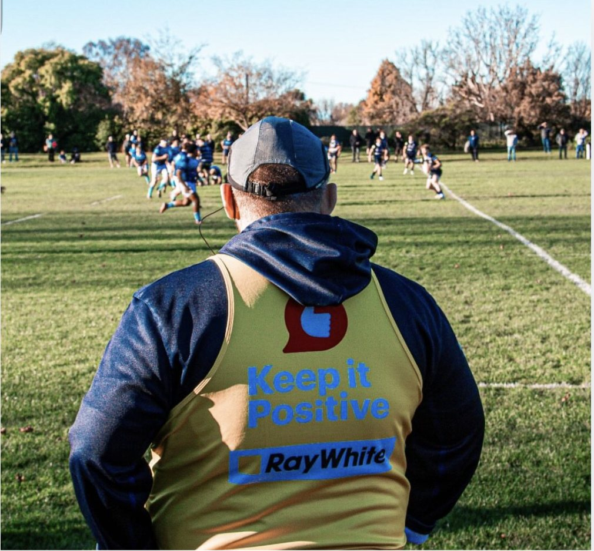

Most coaching education focuses on what to say: the right cue, the well-judged bit of feedback, the halftime words that might just turn things around. Those things do matter. But when you sit with the research, and with what athletes themselves describe, something gentler comes into focus. What tends to change things is rarely the cleverness of the words. It is how we listen, how we ask, when we stay quiet, and the warmth of the relationship underneath it all.
Start with what athletes remember
It is easy to picture good coaching from the coach’s side of the conversation. The more revealing question is what stays with the athlete. When the researcher Andrea Becker asked athletes about the best coaching they had ever had, the finding was clear enough to become the title of the paper: it is not what they do, it is how they do it (Becker, 2009). They rarely talked about drills or tactics. They talked about how a coach made them feel. That they were cared for as a person, understood, believed in, treated fairly.
The harder counterpart is worth sitting with too, gently. When athletes describe coaching that hurt them, they tend to name the same relational things going missing: feeling uncared for, treated unfairly, not really heard. And the effect was not always just a flat afternoon. Sometimes it lingered as self-doubt (Gearity & Murray, 2011). None of this is about blame. Most of us who coach are doing our best with limited time and a lot of people to look after. It is simply a reminder that a conversation is never only about the information. It is also about what the athlete quietly learns, in that moment, about how much they matter to us.

The relationship holds everything else
Before any technique or framework matters, an athlete needs to feel safe. Not only physically, but psychologically safe: able to be honest, to make mistakes, and to ask for help without it counting against them. That idea, psychological safety, first came from research on teams at work, where it turned out to be what allowed people to speak up and learn (Edmondson, 1999). It settles very naturally onto a training ground.
This is not a soft extra to get to once the “real” coaching is done. It is the ground the rest stands on. The quality of a coach’s relationship with an athlete, how close, committed and connected it feels, is one of the steadier predictors we have of their satisfaction, their learning and how they perform (Jowett & Ntoumanis, 2004). The relationship is not what gets in the way of the coaching. More often, it is the thing that lets the coaching in.
Support, more than control
There is a well-evidenced difference in how we tend to communicate, and it shapes a lot of what follows. One way is autonomy-supportive: taking the athlete’s perspective seriously, offering real choices, explaining the why behind a request, easing off the pressure. The other is more controlling: leaning on pressure, guilt, or “because I said so.”
Most of us move between the two, and we drift towards the controlling end exactly when we care most and time is shortest. That is worth naming without shame, because the research is fairly consistent about where each one leads. Autonomy-supportive coaching tends to go with fuller motivation, greater wellbeing and better performance (Mageau & Vallerand, 2003). More controlling approaches can win compliance in the short term, but over time they are linked with athletes feeling frustrated and, eventually, worn out (Bartholomew, Ntoumanis, & Thøgersen-Ntoumani, 2009). Athletes will often do what they are asked. They just quietly stop wanting to. A kind conversation leans, wherever it can, towards the supportive side of that line.
Listening is more active than it looks
We often think of listening as simply not talking. In coaching it asks a little more of us than that. It can look like:
- Attending fully. Clipboard down, eyes up, actually here, rather than half-preparing your next point.
- Reflecting back. Not parroting, but offering a small summary of what you think they mean, so they can hear it and put you right.
- Making room for silence. Leaving a gap for the athlete to think, instead of rushing to fill it.
- Asking open questions. The kind that invite a real answer, rather than fishing for the one already in your head.
The coach who asks “what did you notice about that last set?” is in a very different conversation from the one who says “that wasn’t good enough, focus up.” None of us gets the warm version right every time, especially when we are tired or stretched thin. But it is a direction worth leaning towards.
“The most powerful coaching conversations are usually the ones where the athlete does most of the talking.”
Asking, more than telling
That last point is worth its own moment, because it is where a lot of us feel the pull hardest. The urge to jump straight in and fix things is one of the most human parts of coaching. It comes from caring, and from wanting to help right now. Telling is quick. Asking feels slower, and a little vulnerable, because the athlete might not arrive at the answer we had in mind. And yet a large body of work on questioning and guided discovery suggests that when athletes work something out for themselves, they understand it more deeply and hold onto it for longer than when we simply hand them the fix.
It is also the heart of motivational interviewing, an evidence-based way of talking that has crossed from healthcare into sport. Rather than trying to install motivation from the outside, we listen for the athlete’s own reasons and help them say them out loud (Rollnick, Fader, Breckon, & Moyers, 2020). People tend to be moved far more by what they hear themselves say than by anything we tell them. The task is not to be right. It is to help them find their own way there.

Timing, and being gentle with it
When we have a conversation matters as much as what is in it. The car on the way home after a loss is a very different space from a calm Tuesday session. A lot of good coaching is really a feel for timing: sensing when to say something, when to leave it, and when simply being alongside someone is the whole intervention. The right words at the wrong moment can land harder than we ever meant them to.
This matters most with young people, whose capacity to take anything in straight after competition is often smaller than we assume. Sometimes the most helpful thing we can offer is not a conversation at all. A hand on the shoulder and “I loved watching you have a go today” can be plenty. The debrief will keep.
Beyond the feedback sandwich
The old “positive, negative, positive” sandwich has been taught on coaching courses for years, and it came from a kind instinct: to soften the hard news. The trouble is that athletes usually notice the pattern, and the praise can start to feel like wrapping while everyone waits for the “but.”
The answer is not to be harder. It is to build enough trust that honest feedback, warm and clear at the same time, can be offered directly and taken without an athlete’s guard going up. That is exactly what the relationship research keeps pointing back to: when someone knows you are genuinely on their side, you can be more direct, and it tends to land as care rather than criticism. Trust does not remove the need for honesty. It is what makes honesty feel safe to receive.
A few gentle things to try
None of this needs a new system, and none of it needs to be done perfectly. If you coach, here are a few small experiments for your next session, offered as invitations rather than instructions.
- Notice your talk ratio, kindly. Roughly how much of the conversation is yours? If it is most of it, that is completely normal. You might simply try saying a little less and asking a little more.
- Ask one genuinely open question. Something you do not already know the answer to. “What did you see out there?” tends to open more than “you saw the overlap, right?”
- Offer a reflection instead of an instruction. Try “sounds like the second half felt different,” and then wait, rather than reaching for the fix.
- Check the timing first. Before offering feedback, a quiet question to yourself: is this the right moment for this person to actually hear it?
And be gentle with yourself in all of this. You will get some of these conversations wrong. We all do. The same compassion we are trying to offer our athletes is worth turning back on ourselves.
Effective coaching conversations were never about having all the answers. They are about creating the conditions where athletes can find their own, and trusting that the warmth you build in the quiet moments is what lets the harder conversations land softly.
References
Bartholomew, K. J., Ntoumanis, N., & Thøgersen-Ntoumani, C. (2009). A review of controlling motivational strategies from a self-determination theory perspective: Implications for sports coaches. International Review of Sport and Exercise Psychology, 2(2), 215–233. https://doi.org/10.1080/17509840903235330
Becker, A. J. (2009). It’s not what they do, it’s how they do it: Athlete experiences of great coaching. International Journal of Sports Science & Coaching, 4(1), 93–119. https://doi.org/10.1260/1747-9541.4.1.93
Edmondson, A. (1999). Psychological safety and learning behavior in work teams. Administrative Science Quarterly, 44(2), 350–383. https://doi.org/10.2307/2666999
Gearity, B. T., & Murray, M. A. (2011). Athletes’ experiences of the psychological effects of poor coaching. Psychology of Sport and Exercise, 12(3), 213–221. https://doi.org/10.1016/j.psychsport.2010.11.004
Jowett, S., & Ntoumanis, N. (2004). The Coach–Athlete Relationship Questionnaire (CART-Q): Development and initial validation. Scandinavian Journal of Medicine & Science in Sports, 14(4), 245–257. https://doi.org/10.1111/j.1600-0838.2003.00338.x
Mageau, G. A., & Vallerand, R. J. (2003). The coach–athlete relationship: A motivational model. Journal of Sports Sciences, 21(11), 883–904. https://doi.org/10.1080/0264041031000140374
Rollnick, S., Fader, J., Breckon, J., & Moyers, T. B. (2020). Coaching athletes to be their best: Motivational interviewing in sports. The Guilford Press.